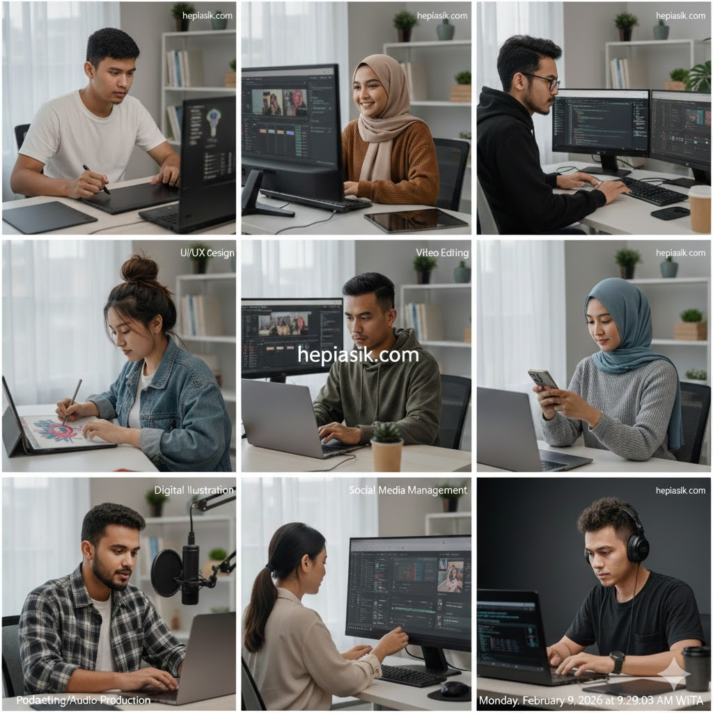
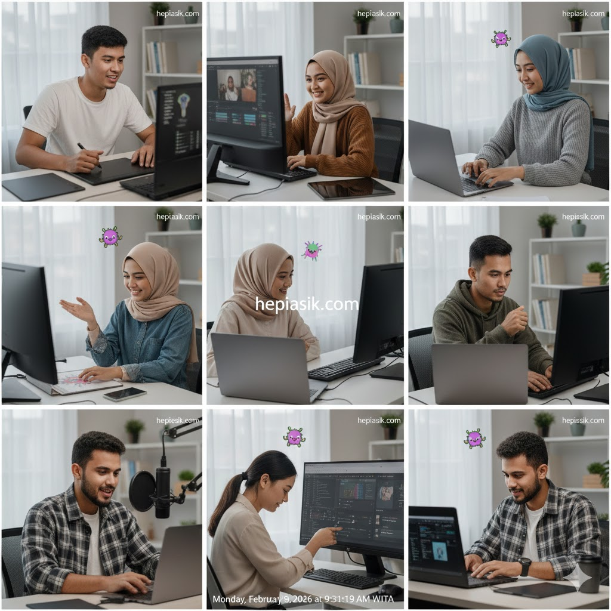

Skill Digital Paling Dicari Perusahaan: Panduan Karir 2026
Memasuki Februari 2026, lanskap tenaga kerja global telah mengalami pergeseran tektonik akibat integrasi masif kecerdasan buatan (AI) dan otomatisasi tingkat tinggi. Skill digital paling dicari perusahaan saat ini bukan lagi sekadar kemampuan teknis dasar, melainkan kombinasi antara penguasaan alat canggih dan kemampuan berpikir strategis yang kompleks. Di era karir modern, individu yang mampu menyelaraskan kecepatan teknologi dengan kedalaman intuisi manusiawi akan menjadi aset yang paling diperebutkan di pasar kerja.
Riset dari World Economic Forum dalam laporan *Future of Jobs 2026* menunjukkan bahwa 60% tugas rutin kini telah didelegasikan kepada mesin, namun hal ini justru menciptakan permintaan tinggi terhadap peran baru yang membutuhkan keahlian hibrida. Perusahaan tidak lagi hanya mencari "pekerja", melainkan "pemecah masalah digital" yang memiliki resiliensi mental dan ketangkasan belajar. Memahami daftar skill digital paling dicari perusahaan adalah langkah awal bagi siapa saja yang ingin tetap relevan dan memiliki nilai tawar tinggi di tengah perubahan zaman yang destruktif ini.
Otomasi dan AI Literacy: Standar Baru Profesional Modern
Kecerdasan buatan bukan lagi teknologi masa depan, melainkan rekan kerja masa kini. Skill digital paling dicari perusahaan tahun 2026 dimulai dengan "AI Literacy" atau kemampuan untuk berinteraksi, mengarahkan, dan mengoptimalkan alat-alat AI. Seth Godin berpendapat bahwa di dunia yang dipenuhi oleh otomasi, nilai manusia terletak pada kemampuan untuk memberikan sentuhan yang tidak bisa dihasilkan oleh algoritma. Ia menulis:
"Satu-satunya cara untuk tetap berharga dalam ekonomi yang berubah adalah dengan melakukan pekerjaan yang tidak bisa diprediksi oleh mesin" (Seth Godin, This is Marketing, 2018, hlm. 42).
Oleh karena itu, menguasai *Prompt Engineering* dan integrasi alur kerja berbasis AI menjadi kompetensi dasar di hampir semua departemen, mulai dari pemasaran hingga pengembangan produk.
Insight penting: Perusahaan mencari orang yang bisa membuat AI bekerja untuk mereka, bukan orang yang digantikan oleh AI. Solusinya, mulailah mempelajari bagaimana alat generative AI dapat mempercepat proses kerja Anda tanpa menghilangkan kualitas pemikiran kritis Anda sendiri.
Kapasitas Fokus Tinggi di Tengah Distraksi Digital
Di era informasi yang sangat bising, kemampuan untuk fokus secara mendalam menjadi keterampilan yang sangat langka dan mahal harganya. Cal Newport menjelaskan bahwa "Deep Work" adalah kemampuan untuk berkonsentrasi tanpa gangguan pada tugas yang menuntut secara kognitif. Menurutnya:
"Kemampuan untuk belajar hal-hal sulit dengan cepat dan kemampuan untuk memproduksi pada tingkat elit adalah dua keterampilan yang sangat berharga" (Cal Newport, Deep Work, 2016, hlm. 14).
Perusahaan saat ini sangat menghargai profesional yang mampu menyelesaikan proyek kompleks secara tuntas di tengah gempuran notifikasi dan tren digital yang tidak ada habisnya.

Kesimpulannya, disiplin mental adalah bagian dari skill digital. Solusinya, latihlah otot fokus Anda dengan teknik manajemen waktu yang ketat dan ciptakan lingkungan kerja yang bebas dari polusi digital agar Anda bisa memproduksi karya dengan kualitas di atas rata-rata.
Manajemen Kebiasaan: Belajar Mandiri Secara Kumulatif
Kecepatan perubahan teknologi menuntut profesional untuk menjadi pembelajar sepanjang hayat (*lifelong learner*). Skill digital paling dicari perusahaan bukan tentang apa yang Anda ketahui hari ini, melainkan seberapa cepat Anda bisa mempelajari hal baru besok. James Clear menjelaskan bahwa kesuksesan jangka panjang adalah hasil dari kebiasaan-kebiasaan kecil yang konsisten. Ia menulis:
"Kualitas hidup Anda sering kali bergantung pada kualitas kebiasaan Anda" (James Clear, Atomic Habits, 2018, hlm. 18).
Membangun sistem belajar mandiri yang berkelanjutan adalah kunci untuk menguasai berbagai tumpukan teknologi (*tech stack*) baru yang terus muncul setiap bulannya.
Insight utama: Perusahaan lebih memilih kandidat dengan *learning agility* tinggi daripada mereka yang hanya menguasai satu keterampilan statis. Solusinya, dedikasikan 30 menit setiap hari untuk mempelajari tren teknologi terbaru di industri Anda agar pengetahuan Anda selalu segar.
Kecerdasan Emosional: Jembatan di Dunia yang Kaku
Semakin canggih teknologi, semakin penting pula kemampuan untuk berempati dan berkomunikasi secara efektif. Daniel Goleman menekankan bahwa kecerdasan emosional (EQ) adalah faktor pembeda utama dalam kepemimpinan dan kolaborasi tim. Ia menegaskan:
"Kapasitas untuk mengenali perasaan kita sendiri dan perasaan orang lain adalah kunci untuk mengelola hubungan dengan sukses" (Daniel Goleman, Emotional Intelligence, 1995, hlm. 82).
Di tahun 2026, kemampuan untuk memimpin tim hibrida dan menjaga moral kerja di tengah tekanan target digital adalah salah satu skill digital paling dicari perusahaan yang bersifat *soft-skill* namun berdampak *hard-result*.
Branding diri sebagai individu yang kolaboratif dan empatik akan membuka pintu karir yang lebih luas. Solusinya, latihlah komunikasi asertif dan pendengaran aktif saat berinteraksi dalam proyek tim, baik secara tatap muka maupun melalui platform kolaborasi digital.
Resiliensi dan Ketabahan dalam Menghadapi Kegagalan Digital
Dunia teknologi penuh dengan percobaan dan kegagalan. Kemampuan untuk bangkit kembali setelah sebuah peluncuran produk gagal atau sistem yang eror adalah bentuk ketangguhan yang dicari perusahaan. Angela Duckworth menyebutnya sebagai *Grit*. Ia menulis:
"Ketabahan adalah tentang memiliki kekuatan untuk bertahan dan terus bergerak maju meskipun menghadapi rintangan" (Angela Duckworth, Grit, 2016, hlm. 56).
Profesional yang memiliki resiliensi tinggi tidak akan mudah menyerah saat menghadapi kendala teknis yang rumit, melainkan melihatnya sebagai peluang untuk iterasi dan perbaikan.

Insight penting: Kegagalan teknis adalah data, bukan bencana. Solusinya, kembangkan pola pikir berkembang (*growth mindset*) di mana setiap kesalahan dipandang sebagai pelajaran berharga untuk menyempurnakan strategi digital berikutnya.
Etika dan Tanggung Jawab dalam Penggunaan Data
Dengan kekuatan data yang besar, muncul tanggung jawab yang besar pula. Skill digital paling dicari perusahaan mencakup pemahaman tentang privasi data, keamanan siber, dan etika algoritma. Erich Fromm berpendapat bahwa kemajuan teknis tanpa kompas moral akan menyebabkan kehampaan. Ia menulis:
"Manusia harus menjadi tuan atas mesin, bukan budak darinya" (Erich Fromm, The Art of Loving, 1956, hlm. 92).
Profesional yang memahami regulasi data perlindungan konsumen (seperti UU PDP di Indonesia atau GDPR global) akan sangat dihargai karena mampu melindungi perusahaan dari risiko hukum dan reputasi.
Kesimpulannya, keamanan adalah bagian dari fungsionalitas. Solusinya, integrasikan prinsip-prinsip keamanan siber dalam setiap proyek digital yang Anda kerjakan, mulai dari pembuatan password yang kuat hingga manajemen akses data yang ketat.
Narrative Storytelling: Mengomunikasikan Data Menjadi Makna
Data yang melimpah tidak akan berguna tanpa kemampuan untuk menceritakannya secara meyakinkan. Simon Sinek mengajarkan bahwa orang tidak membeli "apa" yang Anda buat, tetapi "mengapa" Anda membuatnya. Ia menekankan:
"Kepemimpinan membutuhkan kemampuan untuk mengomunikasikan visi dengan cara yang menginspirasi orang lain untuk bertindak" (Simon Sinek, Start with Why, 2009, hlm. 67).
Kemampuan untuk melakukan *Data Storytelling*—mengubah angka-angka rumit menjadi narasi bisnis yang mudah dipahami oleh pemangku kepentingan—adalah keterampilan tingkat tinggi yang membedakan analis biasa dengan pemimpin strategis.
Insight bagi profesional data: Fokuslah pada dampak, bukan sekadar statistik. Solusinya, latihlah kemampuan presentasi visual Anda dan belajarlah untuk menyederhanakan temuan teknis menjadi wawasan strategis yang bisa langsung dieksekusi oleh tim bisnis.
Kualitas Hubungan Sosial di Lingkungan Kerja Hibrida
Kerja jarak jauh menuntut kemampuan untuk tetap terhubung secara bermakna meskipun tanpa kehadiran fisik. Robert Waldinger menemukan bahwa kualitas hubungan manusia adalah faktor terbesar dalam kebahagiaan dan kesuksesan jangka panjang. Ia menyatakan:
"Hubungan yang baik melindungi kesehatan mental kita dan meningkatkan efektivitas kerja kita secara keseluruhan" (Robert Waldinger & Marc Schulz, The Good Life, 2023, hlm. 34).
Mahir dalam menggunakan alat kolaborasi seperti Slack, Zoom, atau Notion sembari tetap menjaga kehangatan hubungan profesional adalah skill digital paling dicari perusahaan yang ingin membangun budaya kerja yang solid.
Branding diri sebagai penghubung (*connector*) di dalam tim hibrida akan meningkatkan otoritas Anda. Solusinya, jadilah inisiator dalam pertemuan-pertemuan virtual yang bertujuan untuk sinkronisasi visi, bukan sekadar membahas tugas teknis harian.
Manajemen Dopamin dan Kesehatan Mental Digital
Perusahaan mulai menyadari bahwa karyawan yang lelah secara digital (*digital burnout*) tidak akan produktif. Kemampuan untuk mengelola asupan informasi dan menjaga keseimbangan mental adalah skill manajemen diri yang krusial. Anna Lembke memperingatkan tentang bahaya stimulasi digital yang berlebihan:
"Pengejaran dopamin instan lewat gawai tanpa henti akan merusak kemampuan otak untuk merasa tenang dan fokus" (Anna Lembke, Dopamine Nation, 2021, hlm. 104).
Profesional yang mampu melakukan detoks digital secara rutin dan menjaga kesehatan mentalnya akan memiliki stamina yang lebih panjang untuk menghadapi tantangan karir yang berat.
Insight kesimpulan: Produktivitas sejati membutuhkan ketenangan jiwa. Solusinya, tetapkan batasan waktu penggunaan media sosial dan jadwalkan waktu istirahat tanpa layar untuk memastikan fungsi kognitif Anda tetap tajam saat dibutuhkan perusahaan.
Kerapian dan Estetika dalam Produk Digital
Kesan pertama pada produk digital sering kali menentukan keberhasilannya. Alain de Botton berargumen bahwa keteraturan dan keindahan visual mencerminkan kualitas pemikiran di baliknya. Ia menyatakan:
"Kita dipengaruhi oleh keindahan lingkungan kita, dan desain yang baik memberikan rasa aman dan kepercayaan" (Alain de Botton, The Architecture of Happiness, 2006, hlm. 128).
Memiliki pemahaman dasar tentang UI/UX dan desain komunikasi visual adalah nilai tambah yang besar bagi setiap peran digital, karena hal itu menunjukkan perhatian pada detail dan kepedulian pada pengalaman pengguna.
Branding produk digital Anda dengan estetika yang bersih akan meningkatkan nilai jualnya. Solusinya, gunakan prinsip minimalisme dalam setiap presentasi atau antarmuka aplikasi yang Anda bangun untuk menciptakan kesan profesionalisme yang kuat.
Adaptabilitas dan Pemulihan Energi yang Konsisten
Terakhir, kemampuan untuk pulih dari tekanan dan menyesuaikan diri dengan perubahan adalah kunci dari keberlanjutan karir. Tony Schwartz menekankan bahwa ritme kerja manusia harus meniru ritme biologis. Ia menulis:
"Manusia paling produktif ketika mereka bekerja dalam gelombang fokus tinggi yang diikuti oleh pemulihan energi yang disengaja" (Tony Schwartz, The Way We're Working Isn't Working, 2010, hlm. 24).
Kemampuan untuk mengatur ritme kerja sendiri agar tidak mengalami kelelahan kronis adalah skill digital paling dicari perusahaan yang menghargai keberlanjutan (*sustainability*) daripada sekadar hasil jangka pendek yang merusak.
Karir digital adalah maraton, bukan sprint. Solusi akhirnya adalah mengintegrasikan waktu istirahat yang berkualitas sebagai bagian dari strategi kerja profesional Anda. Dengan menjaga energi tetap stabil, Anda akan selalu siap untuk menguasai skill digital baru yang akan terus bermunculan di masa depan.